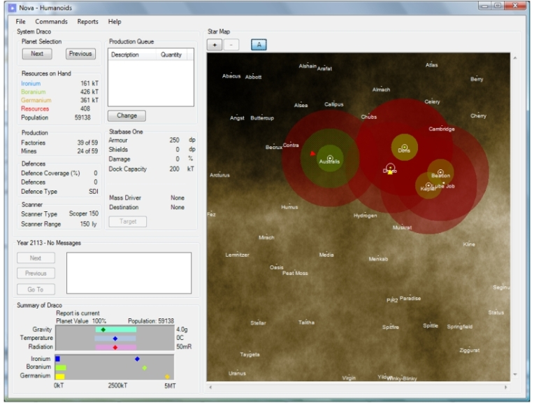
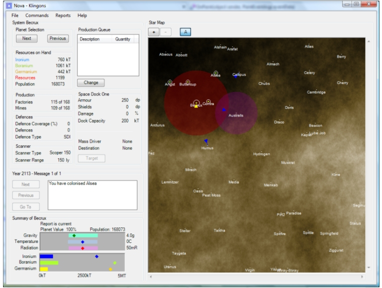

This is the main Nova main window early in a new game but the Humanoids have been given the capability to lay mines (in a test mode).

The mine field belongs to the Humanoids and is shown in green.
Now this is the minefield as seen by another player.

Enemy mine fields are displpayed in purple.